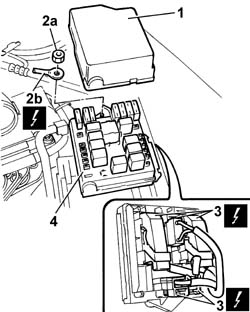

5505A13 Additional junction unit in engine compartment - R.R.
- Path
- Procedures > 55 ELECTRICAL EQUIPMENT > 5505 INSTRUMENT/GAUGE ELECTRICAL CIRCUITS > 5505A multi-function components > 5505A13 Additional junction unit in engine compartment - R.R.
- Kind
- repair procedure (removal / refitting; the operation number is the code)
- Applies to
- all engines; all production periods
- Interactive page
- https://sloeber94.github.io/elrnDB-lThss/en/#/145766
Applies to: all engines; all production periods
 Removing
Removing
 Refitting
Refitting- Disconnect the negative battery terminal.
1. Release the junction unit cover and remove it.
2. Undo the fixing nut (2a) and disconnect the electrical connection (2b).
 | Description | Connector |
|---|---|---|
2b | Battery (+) | A001A |
3. Rotate the junction unit and disconnect the electrical connectors underneath.
| Description | Connector |
|---|---|---|
3 | Junction unit | B001A |
| Description | Connector |
|---|---|---|
3 | Junction unit | B001B |
| Description | Connector |
|---|---|---|
3 | Junction unit | B001C |
| Description | Connector |
|---|---|---|
3 | Engine compartment junction unit | B001D |
| Description | Connector |
|---|---|---|
3 | Junction unit | B001E |
| Description | Connector |
|---|---|---|
3 | Engine compartment junction unit | B001F |
4. Remove the junction unit.

Applies to: all engines; all production periods
Refitting
Removing- Connect the electrical connectors for the junction unit.
| Description | Connector |
|---|---|---|
. | Junction unit | B001A |
| Description | Connector |
|---|---|---|
. | Junction unit | B001B |
| Description | Connector |
|---|---|---|
. | Junction unit | B001C |
| Description | Connector |
|---|---|---|
. | Engine compartment junction unit | B001D |
| Description | Connector |
|---|---|---|
. | Junction unit | B001E |
| Description | Connector |
|---|---|---|
. | Engine compartment junction unit | B001F |
- Connect the electrical connection for the junction unit and tighten the nut.
| Description | Connector |
|---|---|---|
. | Battery (+) | A001A |
- Fit the junction unit cover.
- Connect the negative battery terminal.
Topics that link to this page (11)
- B04 STARTER MOTOR NOT WORKING (vehicle with passive entry)
- I06 MAIN BEAM HEADLAMPS NOT WORKING
- I17 REVERSING LIGHTS NOT WORKING
- I20 FOG LIGHTS NOT WORKING
- I23 LEFT/RIGHT MAIN BEAM HEADLAMP (ONE) DOES NOT COME ON OR COMES ON IRREGULARLY (IN ALL CONDITIONS)
- I28 FOG LIGHT (ONE) NOT WORKING
- N20 HORNS NOT WORKING
- 1820B46 SUPPLY PIPE FROM MASTER CYLINDER (PUMP) - R.R.
- 5505A28 Housing for additional junction unit in engine compartment - R.R.
- 5505C26 ENGINE COMPARTMENT built in wiring - R.R.
- 7025A28 bonnet lid RELEASE - R.R.